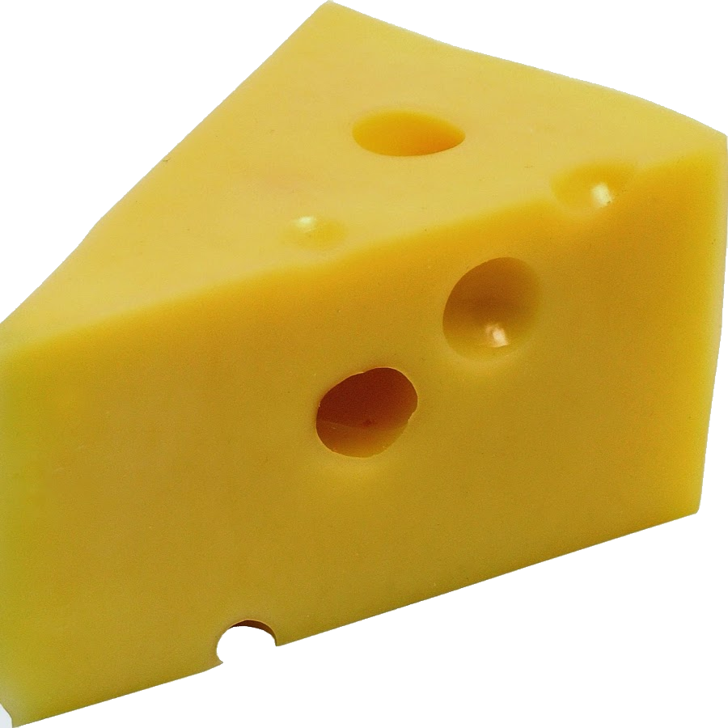
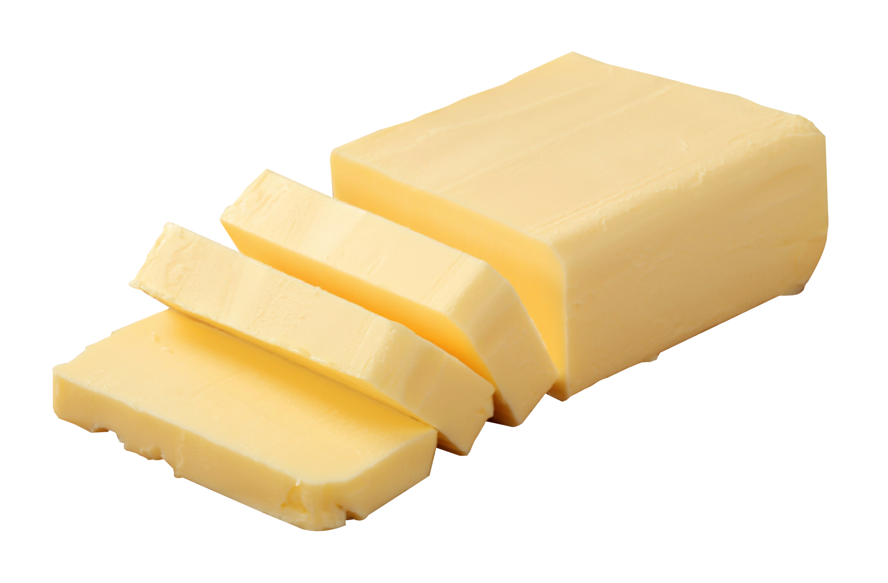

Milk:
Subtract the current date from the sell-by date, and add five.
Cheese:
Depends on the kinds for cheese, however cheese can be kept in the freezer for 6-8 months.
1-2 months in the fridge usually.
Butter:
6-9 Months for the exipriary date
It needs to be stored property as butter needs to be stay away from strong odors.